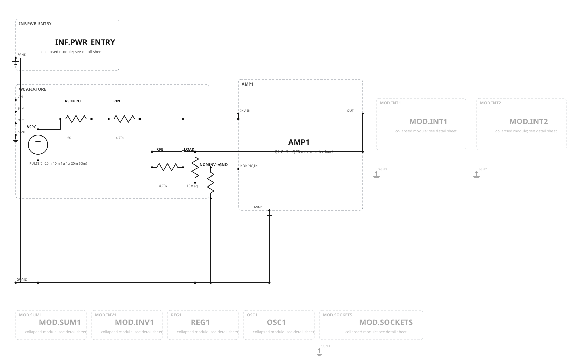
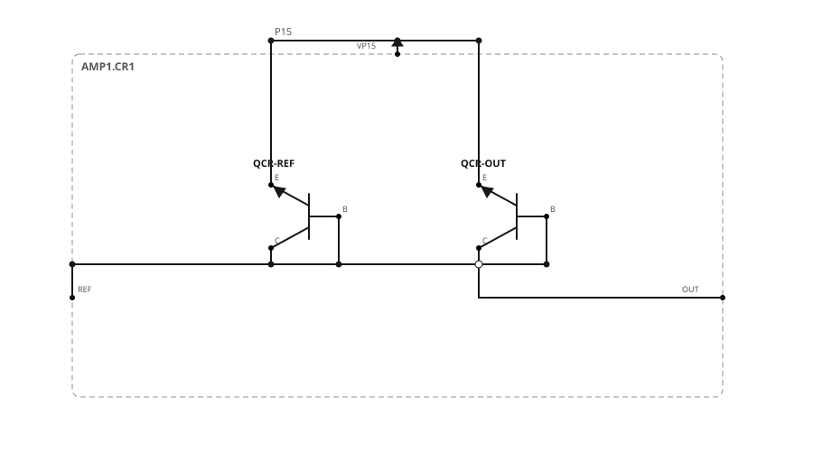
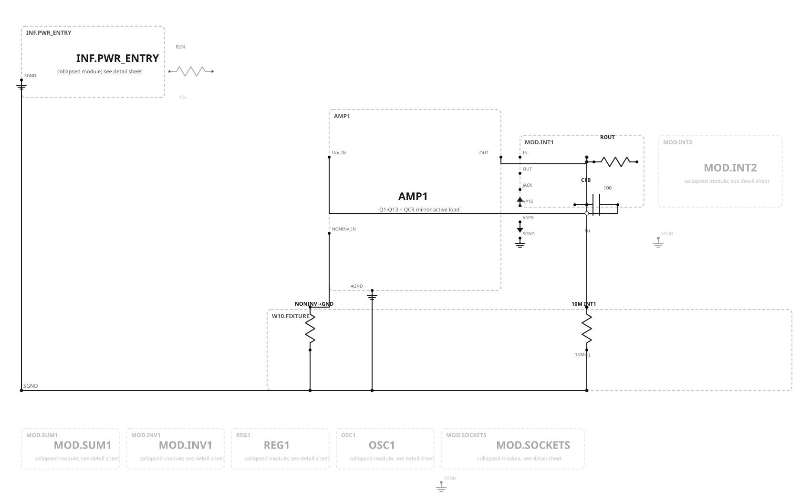
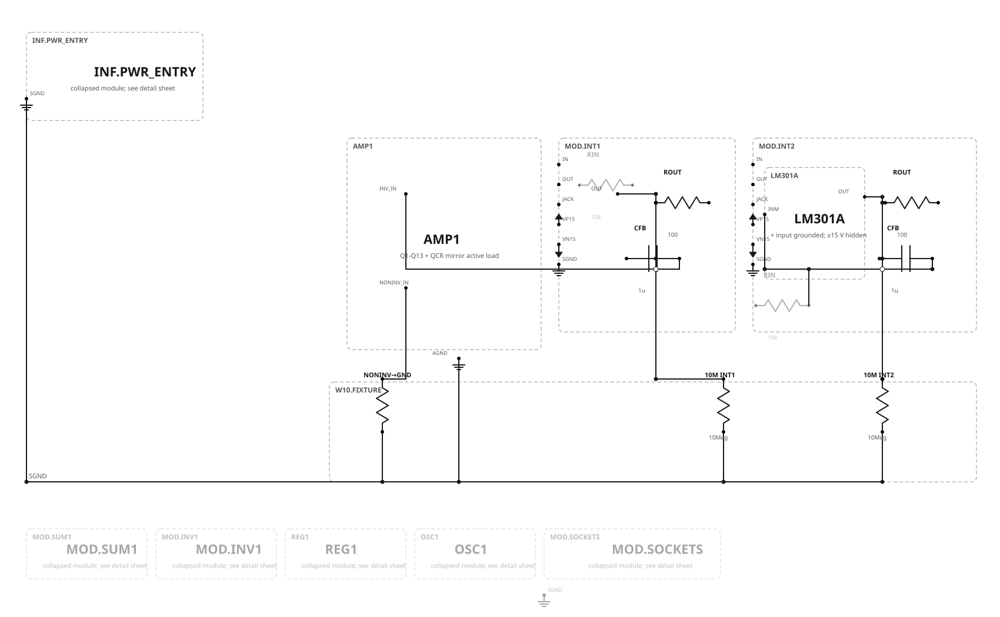

Week 10 · Current-mirror active load
QCR-REF is diode-connected at Q1’s collector. QCR-OUT shares its base/emitter conditions and sources the mirrored current into Q2’s collector/COMP_A. This converts the first differential stage to a high-gain single-ended output while avoiding the large collector resistors that are unattractive in integrated fabrication.


| Item | Week 10 state | Build/measurement note |
|---|---|---|
| QCR-REF / QCR-OUT | Matched PNP pair; proposed 2N4250 historical-style implementation | Thermally couple; verify actual package C/B/E pinout before wiring |
| Reference branch | QCR-REF B=C at Q1 collector | Measure reference current without adding material burden voltage |
| Output branch | QCR-OUT collector at Q2 collector/COMP_A | Verify forward-active compliance across intended common-mode/output range |
| Former passive load | Installed, electrically inactive | Do not leave it in parallel with the mirror |
| Realistic model | TBD | No transistor matching or thermal-performance claim yet |
Hold-drift experiment
The active hold interval begins only after an external precharge fixture is removed. Both input resistors are open during timing, and there is no hidden bleed resistor.


| Protocol | Required condition |
|---|---|
| Initial condition | Precharge both outputs to +5.00 V with a temporary external fixture; remove it before timing |
| Hold interval | At least 60 s; record ambient and transistor-pair temperature |
| Input | Both 10 kΩ input resistors electrically inactive/open |
| Feedback | 1 µF film capacitor on each channel; separately measure insulation leakage and dielectric absorption |
| Loading | Matched 10 MΩ probes/meters; repeat with probes exchanged |
| Result | IEQ = CF × dVOUT/dt; report sign, magnitude, temperature, and settling interval |
Gate and scope boundary
Figure 10.25 FET followers remain a separate optional branch and do not enter the cumulative Week 11 baseline.
| Gate | Status | Meaning |
|---|---|---|
| Graph/schema | PASS | Strict W09→W10 inheritance and explicit load-state transition |
| SVG/SPICE connectivity | PASS | All four published pairs agree pin-for-pin/net-for-net |
| Ideal electrical performance | BLOCKED | Diagnose inherited Week 9 failures before rerunning |
| Realistic performance | UNSUPPORTED | Exact lawful models, package pins, matching, leakage, and thermal behavior remain unbound |
Review decision
Approval accepts the mirror insertion map, inactive status of the former passive load, hold-comparison topology, and presentation. It does not approve quantitative performance or insert anything into the capstone.
Next after topology approval: Week 11 reset/operate/hold switching, amplifier-error measurements, and the precision-rectifier module. The inherited Week 9/10 electrical proof remains a separate required repair stream.
Canonical authority: Week 10 graph. Protocol: case manifest. Decision: production record. Deferred projects remain unchanged: physical patch-cord sheets, separate permanent-infrastructure sheets, Figure 10.25 optional branch, and the separate low-voltage redesign.